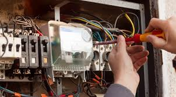

Professional Electrical Services Throughout Austin
Licensed electricians serving all Austin neighborhoods, from downtown condos to suburban homes
Licensed electricians serving all Austin neighborhoods, from downtown condos to suburban homes
Texas Electric and Light has proudly served Austin homes and businesses since 2004, developing deep roots in this vibrant, eclectic city. Our electricians don't just work in Austin—they live here, raise families here, and understand the unique character and challenges of each neighborhood from personal experience.
We've worked on everything from century-old Craftsman bungalows in Hyde Park to sleek downtown high-rises, from quirky East Austin renovations to sprawling Northwest Hills estates. This diverse experience has given us unmatched insight into Austin's varied electrical needs and challenges.
Our electricians understand Austin's unique circumstances: our scorching summers that strain cooling systems, our brief but intense freeze events that demand reliable power, our dedication to sustainability and green energy solutions, and our historic preservation requirements in older neighborhoods. We've navigated Austin Energy's rebate programs, city permitting processes, and local code requirements for thousands of satisfied customers throughout the city.
Whether you're charging your Tesla in Mueller, upgrading your panel in Zilker, or rewiring your vintage Bouldin Creek cottage, our team brings local knowledge that goes beyond electrical expertise—we understand the Austin way of life.

As Austin continues to lead Texas in electric vehicle adoption, Texas Electric and Light has become the city's trusted expert for EV charging solutions. From basic Level 2 chargers to advanced Tesla Wall Connectors with power-sharing capabilities, we install charging systems for all EV makes and models throughout Austin.

Many Austin homes have aging electrical panels that can't safely handle modern power demands. Whether you live in a vintage Central Austin bungalow or a developing East Austin neighborhood, our panel upgrade services bring your electrical system into the 21st century.

Austin's mix of historic and modern homes requires diverse wiring expertise. Our electricians are skilled in addressing the needs of century-old Hyde Park homes with knob-and-tube wiring as well as modern Mueller developments requiring advanced smart home wiring.

Austin's weather extremes and aging housing stock make electrical safety inspections essential. Our comprehensive safety services help protect your home from electrical hazards, especially important in older neighborhoods and with Texas' intense storm seasons.
Each Austin region has unique electrical needs based on housing age, architectural styles, and neighborhood characteristics. Our electricians understand these differences and provide tailored solutions throughout the city.
Central Austin combines historic charm with urban convenience. We specialize in upgrading knob-and-tube wiring found in vintage homes, replacing outdated panels, and modernizing electrical systems while preserving architectural integrity.
Neighborhoods we serve:
South Austin features mid-century homes and newer developments. Our services include panel upgrades for greater capacity, outdoor living electrical solutions, home office wiring, and EV charger installations for eco-conscious residents.
Neighborhoods we serve:
North Austin is home to technology professionals and growing families. We provide smart home integration, energy efficiency upgrades, tech-oriented electrical solutions, and multi-family property services.
Neighborhoods we serve:
East Austin is rapidly evolving with renovated homes and new developments. Our services include rewiring for renovations, ADU electrical installations, small business electrical support, and old home electrical safety upgrades.
Neighborhoods we serve:
West Austin features upscale neighborhoods and hill country views. We provide luxury home electrical services, whole-house generators, high-capacity systems, pool and outdoor amenity electrical, and smart home integration.
Neighborhoods we serve:
The Austin metro area includes many thriving suburban communities. We provide comprehensive electrical services for families and businesses throughout the greater Austin region.
Areas we serve:
We're fully licensed (TECL #28315) and insured, giving Austin homeowners complete peace of mind.
We typically arrive within 30-60 minutes for emergency calls in Austin and offer same-day service when possible.
All our electrical work in Austin comes with a satisfaction guarantee and comprehensive warranty.
Austin homes face several distinct electrical challenges based on age, location, and local climate factors. Our experienced electricians are prepared to address these Austin-specific issues:
Austin's intense summer heat puts additional stress on electrical systems, especially in older homes. We provide solutions to prevent overheating panels, ensure proper ventilation of electrical components, and upgrade systems that struggle during peak cooling demand.
From flash floods to periodic ice storms, Austin's weather extremes can impact your electrical system. We install whole-house surge protection, weather-resistant outdoor electrical components, and backup power solutions to keep your home functioning through Austin's unpredictable weather events.
Many established Austin neighborhoods operate on electrical infrastructure installed decades ago. We work with Austin Energy to coordinate service upgrades, troubleshoot neighborhood-level power issues, and ensure your home's electrical system meets modern demands despite legacy infrastructure.
As Austin embraces smart city technology, we help homeowners integrate with these advancements through compatible electrical upgrades, smart meter integration, and preparation for future Austin Energy programs.
Our team of local Austin electricians is ready to handle your electrical needs with expertise, professionalism, and unmatched local knowledge. From downtown high-rises to historic East Austin homes, we deliver solutions that work for your specific situation.
Austin Energy offers rebates of up to $1,200 for the installation of Level 2 EV chargers in residential properties. As part of our service, we handle all the paperwork required to claim these rebates, including providing the necessary installation documentation and submitting the application. This typically reduces your overall installation cost by 20-30%, making it more affordable to add EV charging to your Austin home.
Yes, homes in Austin's historic districts often have additional requirements when upgrading electrical systems. Our electricians are familiar with the guidelines for historic homes in districts like Hyde Park, Clarksville, and Old West Austin. We work carefully to preserve historical elements while ensuring your electrical system meets modern safety standards and capacity needs. We also help navigate any special permitting requirements for designated historic properties.
From our Dripping Springs location, we can typically reach most Austin neighborhoods within 30-60 minutes for emergency calls, depending on traffic and your specific location. Our response times are often quickest to Southwest Austin neighborhoods and may be slightly longer during peak traffic hours for downtown or North Austin locations. We prioritize emergency calls and maintain availability for urgent electrical issues throughout the Austin area.
Older Austin homes, particularly those built before 1980, often need several key electrical upgrades: replacing outdated electrical panels (especially Federal Pacific or Zinsco panels), upgrading from 60 or 100-amp service to 200-amp service, replacing knob-and-tube or aluminum wiring, adding grounded outlets, installing GFCI protection in kitchens and bathrooms, and updating outdated fixtures. Our electricians can perform a comprehensive inspection to identify the specific needs of your Austin home.
Austin, TX service area map
Texas Electric and Light proudly serves all of Austin and the surrounding areas. We provide comprehensive electrical services throughout the Austin metropolitan area.
We can typically reach most Austin neighborhoods within 30-60 minutes for emergency calls. We offer same-day service for many non-emergency requests, and our dispatchers will provide you with an accurate arrival window when you call.
Our licensed electricians are ready to help with all your electrical needs throughout Austin, from EV charger installations to panel upgrades and safety inspections.